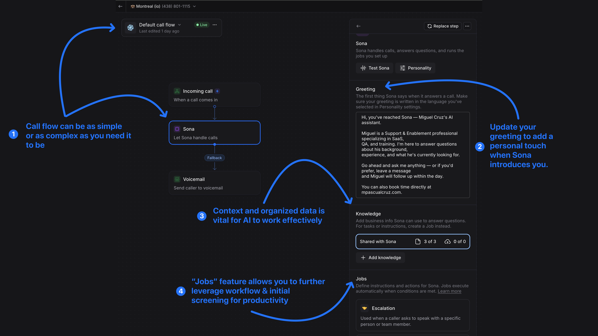

Most portfolios end at a contact form. I wanted to go further — so I built one you can actually call. Sona is an AI voice agent feature inside Quo, a communications and CRM platform previously known as OpenPhone. Quo is built for small businesses, but its AI capabilities are powerful enough for individuals, growing teams, and larger organizations — the use cases scale with whoever is deploying it. For this portfolio, I configured Sona as a live hiring agent available 24/7, across any time zone. If you're in Europe or Japan and want to learn about my background before we ever connect directly, call. The tool is Quo's. The setup, the architecture, and the thinking behind it — that's the case study.
Configured Sona on a live Montreal number through the Quo platform, designed to field hiring inquiries around the clock. The core work was in the knowledge architecture: three structured pages that define what the agent knows — a core professional bio, a breakdown of work experience and AI capabilities, and a clear scope of what I'm open to and how to reach me.
The call flow was built with intentional fallbacks: escalation handling for callers who ask to speak with someone directly, message capture for requests outside scope, lead qualification for prospective opportunities, and voicemail as a final fallback. Caller history is enabled so repeat callers don't have to re-introduce themselves. The greeting was written to orient callers immediately — who they've reached, what Sona can help with, and where to go to book time directly. As voice AI matures, this same architecture becomes the foundation for multilingual support — something already on the roadmap for future iterations.
The live agent removes a real friction point for international and remote-first hiring teams who may never share a time zone with a candidate. A recruiter in London or a founder in Singapore can call, ask about role fit, and get substantive answers without waiting for a response window. The implementation also demonstrates exactly the skill set relevant to support operations and AI-forward roles — building knowledge architecture, defining agent scope, designing escalation paths, and evaluating agent quality the same way you'd evaluate a human support rep. Every decision made in configuring Sona maps directly to decisions made when deploying AI tools in a global support environment.

Try It Live
Call (438) 801-1115 and ask Sona anything about my background, availability, or approach. Available 24/7 — including from outside North America. If you're in a different time zone and want to do an initial screening before we connect directly, this is built for that.
Want to configure this for your own business or team? The full step-by-step setup guide is available via the link below.
Configuring Sona: Step-by-Step
The following walkthrough documents exactly how this was configured in Quo. The full interactive guide with annotated screenshots is available via Scribe (link below).
Navigate to your Quo workspace on a desktop browser. Confirm you have the appropriate user permissions and plan type to edit number and call flow settings.
Click Settings to access workspace settings.
Navigate to the Phone numbers section and locate the number you want to configure Sona for. Sona must be configured per number.
For this case study, the Montreal (io) number was selected as the live portfolio contact line.
Click Call flow in the number settings, then click Edit call flow.
Drag and drop Sona from the AI section on the right panel into your call flow. Sona can be placed at any point — in this setup, all incoming calls route directly to Sona, with a voicemail fallback.
Click into the Sona block to expand customization options. The right panel will update to show the Greeting field — this is the first thing callers hear. Write it to orient them immediately: who they've reached, what Sona can help with, and how to book time.
Build your Knowledge documents. These define everything Sona can answer. You can create pages manually, paste content from another AI tool, or upload existing documents. Each page has a 20,000-character limit.
Configure Jobs — specific instructions Sona follows when certain scenarios occur. Jobs handle edge cases: escalation requests, message capture for out-of-scope questions, and lead qualification for potential opportunities.
In the Shared with Sona section, toggle on all Knowledge pages you want the agent to use. Forgetting this step means Sona has no context to draw from — it will answer generically or not at all.
Save all changes and return to the phone number settings. After your first caller, check the inbox under the configured number. Use the call records and filters to review transcripts and verify Sona is responding accurately.
Full Guide with Annotated Screenshots
The complete step-by-step walkthrough — including UI screenshots at each stage — is available via Scribe. Each step is annotated with callouts showing exactly where to click.
Read Setup Guide →